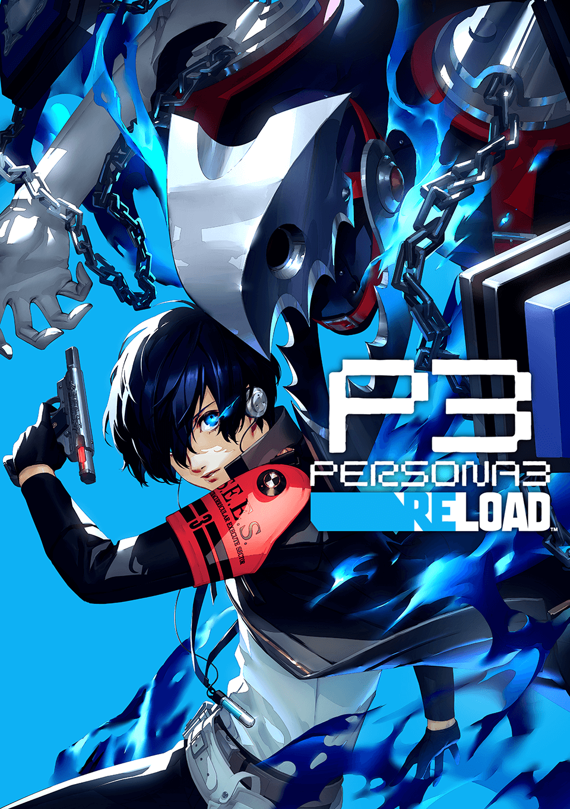
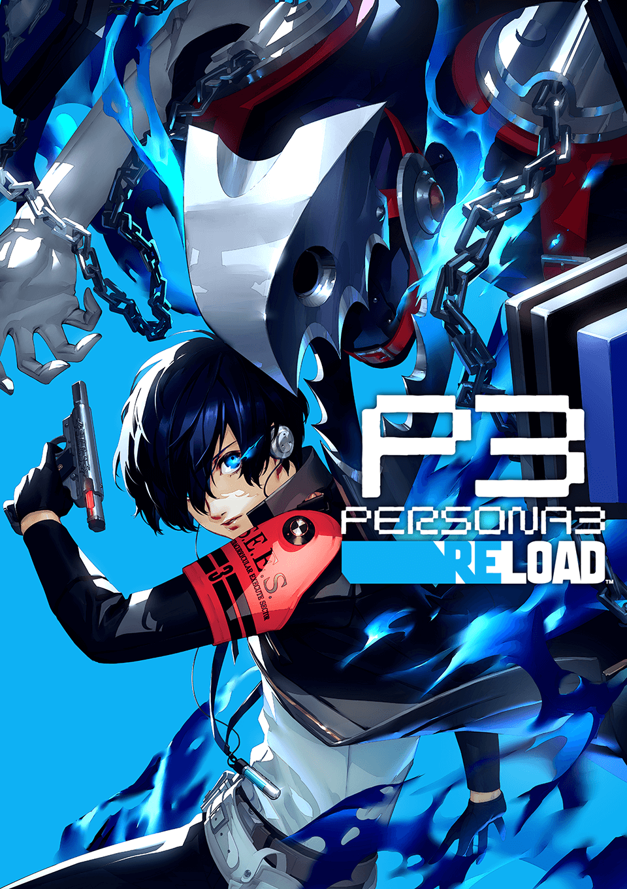

Persona 3 Reload[c] is a 2024 role-playing video game by Atlus. Reload is a remake of Persona 3 (2006), the fourth main installment of the Persona series, itself a part of the larger Megami Tensei franchise. As with the original game, the protagonist is a high school student returning to his home city a decade after his parents were killed in a fatal car crash. He soon gains the potential to summon a Persona–the physical manifestation of his inner spirit, and joins the Specialized Extracurricular Execution Squad (S.E.E.S.), a group of like-minded Persona users. Together, they are tasked with defeating Shadows and uncovering the mystery of the Dark Hour.
 
